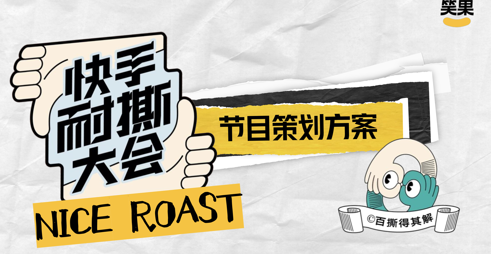
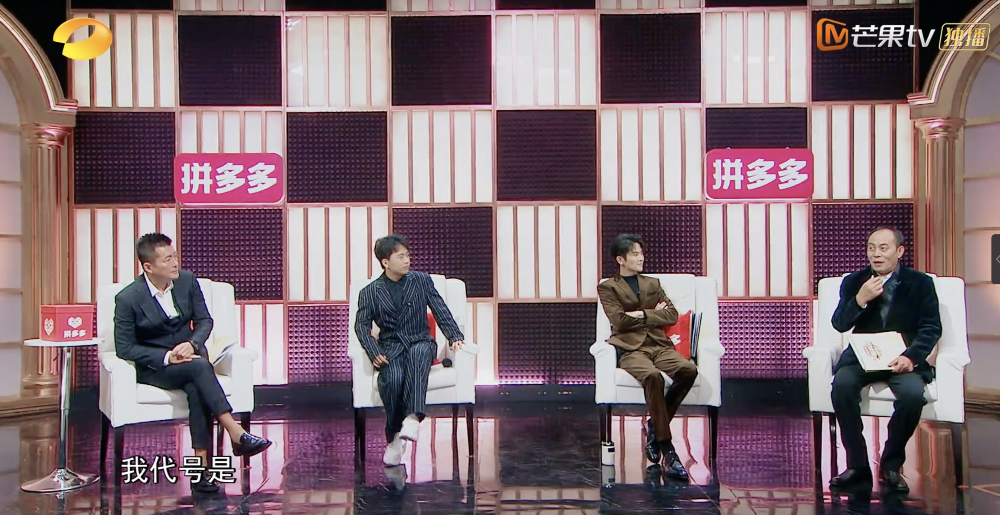
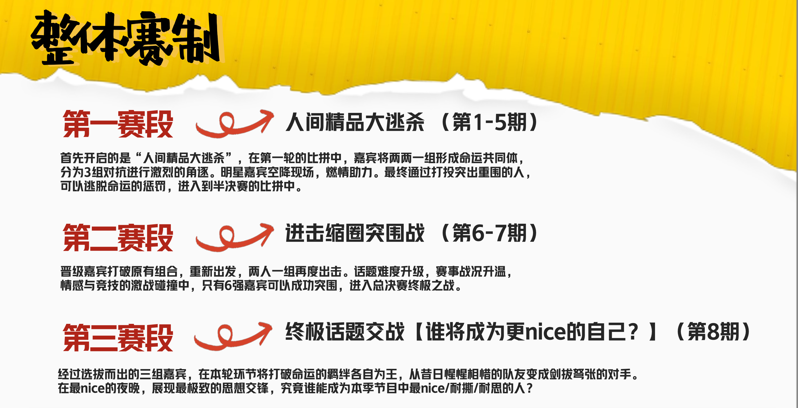
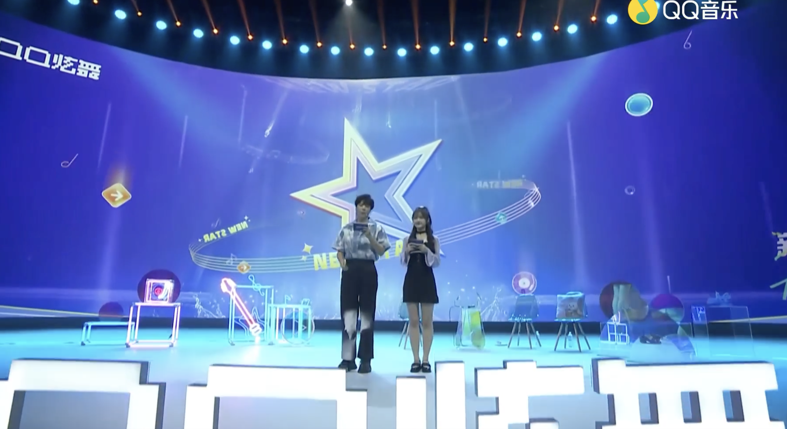
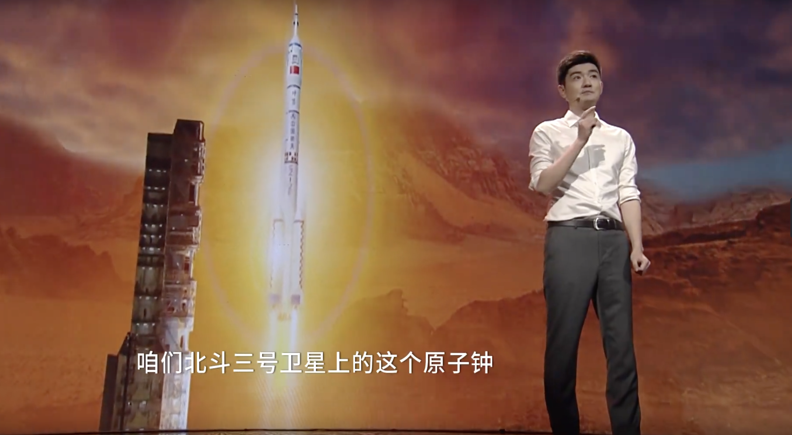

快手 S 级脱口秀综艺 · 核心编剧
《超nice大会》
参与节目策划、主题痛点筛选、热点话题预埋、台本撰写与现场录制。以“好笑且有共鸣”为内容锚点，完成多期节目创意设计。
CONTENT STRATEGY · CULTURAL STORYTELLING
路琳琳，内容策划 / 节目编导。聚焦综艺内容、短视频与文化传播，从创意策略到现场执行，完成可被记住的内容体验。
浏览精选作品 ↓IDEA
TO
SCREEN
01 / MY PRACTICE
深耕综艺与短视频内容策划，参与芒果 TV、腾讯视频、快手、B 站等平台项目。擅长把文化议题转化为观众愿意停留、愿意分享的内容现场。
02 / SELECTED WORK
策划、编剧、执行与后期统筹的项目片段。

快手 S 级脱口秀综艺 · 核心编剧
参与节目策划、主题痛点筛选、热点话题预埋、台本撰写与现场录制。以“好笑且有共鸣”为内容锚点，完成多期节目创意设计。

芒果 TV · 编剧统筹
旅行真人秀中的文化植入、游戏策划、台本与现场执行。

腾讯视频 · 核心编剧
直播带货综艺的玩法设计、艺人沟通与内容执行。

QQ 音乐 · 现场编剧
七夕舞夜场直播的前期研发、台本与艺人内容统筹。

湖南卫视 · 实习编导
共和国七十年主题节目：策划、脚本与嘉宾邀约。
学术研究 · 本科毕业论文
从社会、商业与文化三个维度，讨论知识类短视频的传播价值与发展可能。
03 / WHAT I BRING
选题研究、节目定位、用户洞察、商业与文化内容融合。
节目结构、游戏设计、台本撰写、艺人前采与口播设计。
跨工种沟通、现场导演、流程把控、后期剪辑大纲与盯片。
CULTURE MATTERS
在“绣美非遗”满族刺绣保护项目中，以“互联网 + 传统工艺”为线索，尝试将工艺、社群、体验与数字技术连接起来。
绣美